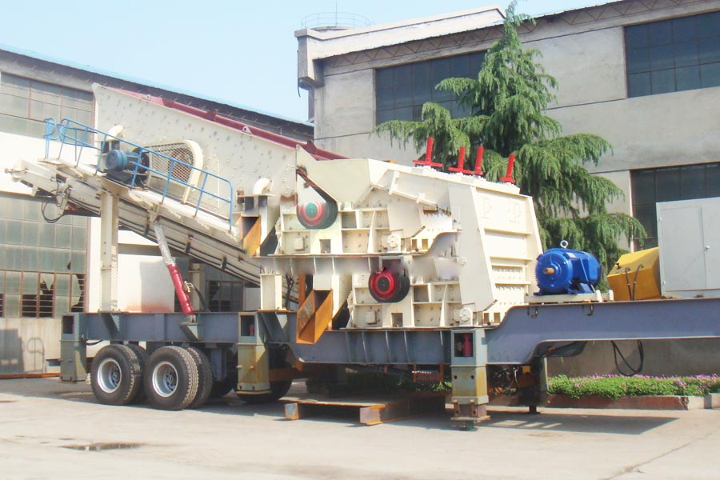

Construction waste crushing production line

Mobile construction waste crushing station for urban construction waste crushing.
mobile stone crusher machine
mobile stone crusher machine. Mobile crushing plant, mobile crusher, China's leading manufacturer of crushing and screening equipment, CAG developed to meet customer needs Roll mobile crusher, tire type mobile crusher, crawler mobile crushing station high-cost products, but also provide first-class service support and solutions.
CAG mobile crusher station manufacturers, mobile crushing plant is divided into our production, tire mobile crushing station, tire crusher station is mainly used for small and medium sized ore quarry crusher, crawler crushing plant are generally used in large-scale crushing production line. General Tire mobile crushing station has investments.

The Mobile crushing plant
The mobile crushing plant offer ready to run, versatile crushers with instant set-up time, ensuring that customers can generate income immediately. These solutions are diesel-driven and therefore work independent of the electricity grid and require no external power supply. They are cost-effective, as they save installation costs and time, and offer quick and easy reconfiguration of the plant for changing production demands.
Tire mobile crusher station products are: Jaw mobile crusher station; Cone Crusher mobile crushing plant, impact crusher mobile crushing plant, vertical shaft impact crusher broken mobile station, cone crusher mobile crushing station feed different configurations customized according to your requirements. The mobile crusher.
The Semi-mobile crushing plant
Indonesia mobile crushing plant supplier. The semi-mobile crushing plant are comprised of standard, heavy-duty crushers supplied complete and ready to run. Crushers, mounted on skid-frames, do not require concrete foundations and are designed for rapid installation and easy integration with the rest of our product range. CAG manufacturer supplies standard modules which are reconfigurable and scalable and therefore allow customers to start small and change or grow their processing plant as demand increases. These tried and tested crushers are designed to handle the harshest conditions and toughest rock in all types of applications.
CAG manufacturer crushing solutions
CAG manufacturer supplies a full range of cost effective, heavy duty, fit for purpose, crushing plant including jaw crushers, cone crushers, horizontal shaft impact (HSI) crushers and vertical shaft impact (VSI) crushers. Our crushing plant are ideal for primary, secondary and tertiary applications in quarrying, mining, recycling, infrastructure and construction. CAG manufacturer's machines crush millions of tonnes of coal, aggregate, sand, construction and demolition (C&D) waste, mine ore, blasted rock and river gravel annually.
Mobile crushing plant, mobile crushing plant, mobile crushing machine price, mobile crusher models, this paper introduces a mobile crushing plant, mobile crusher station, the performance characteristics and technical parameters of mobile crusher, tire mobile crusher station cost-effective, in the domestic market account for a large share of mobile crushing.
Indonesia mobile crushing plant price. Construction waste mobile crusher, mobile crushing and screening equipment, crawler mobile crushing station, with the recent energy conservation, construction waste recycling and other hot topics, the advantages of mobile crushing station gradually become clear, the future of crushing and screening equipment direction of development must be integrated mobile crushing and screening equipment.
Leave Me A Message, Now
If you have any questions regarding equipment prices, production line configuration or other problems, you can send a message to us, we will contact you soon.